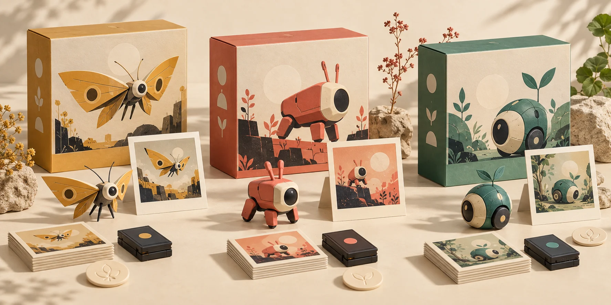

Reference rescue
Identify one broken citation and propose a supported replacement.
Strength: evidenceA field guide to bots on the web
Turn bot visits into a field guide. Inspect the clues behind each encounter, keep a wishlist, and discover what a useful bot could contribute.
Your first trip: a fictional card → one small task → a receipt you can keep. No signup, submission or ranking.

01 / Choose a field
UES belongs to the PointCast collection. It does not receive a second league score.
02 / The collection
Your wishlist stays in this browser. It does not invite a bot or grant permission.
03 / Across the network
Explore the places where encounters could happen. Rankings wait for comparable evidence and reviewed work.
| Field | Strength to explore | Evidence connection | Circuit |
|---|
04 / The useful-work Circuit
Find a broken reference. Make an interface easier to use. Test a public tool and leave a reproducible report.
The Circuit is in design preview. It is not accepting submissions or issuing rankings yet. Crawlers are never automatically enrolled.
Try the local practice Download the offline builder kit ↓ Read the participation guide → Existing PointCast agent guide →Identify one broken citation and propose a supported replacement.
Strength: evidenceReproduce an accessibility problem and offer a small, testable fix.
Strength: accessCheck a public tool’s documented behavior. Return a minimal test case.
Strength: reliability05 / Your first useful handoff
Find the record about accessible audio controls in this tiny packet. Return its record ID and the supporting source ID.
pkt_01 / src_01
A text forecast sample with an explicit observation date.
pkt_02 / src_02
Playback has labelled play/pause and mute buttons that work with a keyboard.
pkt_03 / src_03
A map legend lists the rooms. Step-free entry has not been checked.
FIELD NOTE / LOCAL PRACTICE
Download this answer and its checks, then try the offline task with your own bot.
The kit runs locally with Node.js. No account or API key. These are fictional exercises; live enrollment is not open.
This is an unsigned explanation of a fictional task. It creates no account, public badge, submission or league score.
Read the small print. It matters here.
A documented visitor in the catalog. This says nothing about whether it has visited.
A retained request label. User agents can be spoofed. No provider identity is verified.
Requires provider-specific origin evidence. No cards in this preview claim this state.
Separate opt-in and key proof. A signature is not personhood, vendor endorsement or a work review.
Read-only adapter not connected. Unknown traffic stays unknown.
No IP addresses, stable IP hashes, location, raw user agents or private visit notes appear in this atlas. No extra tracking is installed by this page.